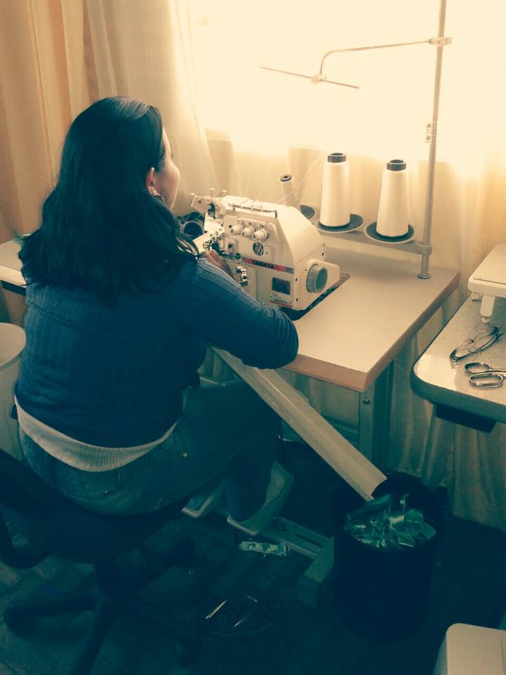

DIARTESMANUAIS
Sobre meu trabalho
Meu nome é Alessandra Delabary
Comecei meu trabalho recentemente, e desde então fui me aperfeiçoando em minhas técnicas de artesanato. Recebo encomendas de artigos para casa, roupas e acessórios, além de presentes muito criativos.
